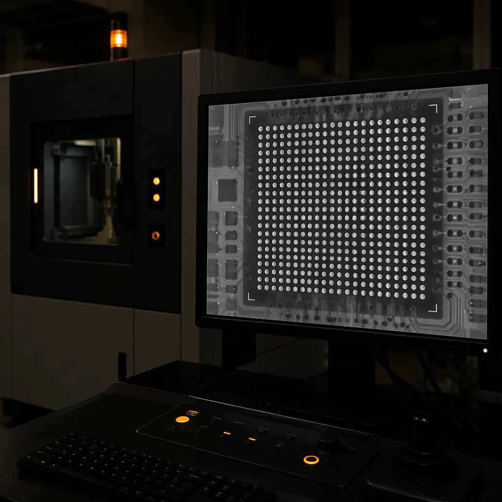

42|
42| PCB assembly looks simple from the outside: print solder paste, place components, heat it up, done. But the gap between "assembled" and "assembled reliably" is where most manufacturers fail. A board that passes visual inspection can have cold joints lurking under BGAs, insufficient solder on critical power components, or moisture damage from improper handling — all invisible until the board fails in the field.
57| 58|This guide walks through every step of PCB assembly as it's actually performed in a production environment — specifically, our 15,000㎡ facility with 8 SMT lines running Yamaha YSM20R and ASM Siplace placement machines. We'll cover what happens at each station, what can go wrong, and what separates IPC Class 2 production from Class 3.
59| 60|Factory context: Our SMT lines place approximately 8 million components per day across all lines. At that volume, even a 0.1% defect rate means 8,000 defects daily. The process controls described below are what keep our actual defect rate at under 50 DPMO (defects per million opportunities) — roughly 0.005%.
62|Step 1: Material Preparation & Incoming Inspection
65| 66|Assembly begins before any machine is powered on. Every component reel, tray, and tube arrives with documentation — and every document gets verified against the BOM and the physical material.
71| 72| 73|
74|
73|
74| What actually happens: Our IQC (Incoming Quality Control) station checks manufacturer part numbers against the BOM, verifies date codes (components more than 2 years old require baking before use), measures sample dimensions for mechanical fit, and confirms that moisture-sensitive devices (MSDs) were shipped in sealed packaging with humidity indicator cards intact.
75| 76|For bare PCBs arriving from our fabrication department, IQC verifies: finish quality (ENIG thickness ≥3µm Au, HASL flatness within IPC spec), solder mask registration (no misalignment >0.05mm), and hole wall quality on cross-section samples. A single batch of boards with thin ENIG or poor mask registration will cause assembly defects that no amount of process control can fix.
77| 78|Critical data point: According to IPC studies, 40% of SMT assembly defects originate from incoming material quality — not from the assembly process itself. Bypass IQC and you're betting your entire production run on your supplier's quality control.
80|Step 2: Solder Paste Printing
83| 84|This is the single most critical step in SMT assembly. If the solder paste deposit is wrong — wrong volume, wrong position, wrong shape — nothing downstream can fix it. Industry data consistently shows that 60-70% of all SMT defects trace back to the printing process.
89| 90|The process: a stainless steel stencil (laser-cut, typically 0.1-0.15mm thick) is aligned over the PCB. Solder paste — a mixture of tin-silver-copper alloy particles suspended in flux — is spread across the stencil with a squeegee blade at controlled pressure, speed, and angle. The paste deposits through the apertures onto the PCB pads.
91| 92| 93|
94|
93|
94| ±25µm
95|The precision required: For 0.4mm pitch BGA pads, a single aperture is roughly 0.25mm wide. The solder paste deposit must be centered within ±25µm of the pad center and must cover 80-120% of the pad area. SPI (Solder Paste Inspection) systems measure every deposit in 3D — volume, area, height, and position — and reject boards that fall outside spec before a single component is placed.
96| 97|Stencil design matters: Aperture shape, aspect ratio, and area ratio all affect paste release. For fine-pitch components (0.5mm and below), aperture walls may be electropolished or nano-coated to improve paste release. The stencil thickness directly controls paste volume — too thin and you get insufficient solder; too thick and you get bridging on fine-pitch pads. Step stencils (different thicknesses in different areas) solve this but add cost and complexity.
98| 99|Step 3: SMT Component Placement
100| 101|Pick-and-place machines are the workhorses of SMT assembly. Modern placement systems like the Yamaha YSM20R achieve placement speeds of 95,000 CPH (components per hour) with placement accuracy of ±0.035mm — roughly one-third the width of a human hair.
106| 107|The placement sequence matters: Components are placed in a specific order based on size and mass. Small passives (0201, 0402) go first because they're lightest and most susceptible to displacement. Larger ICs and connectors follow. BGAs — which cannot be visually inspected after reflow — are placed last and with the highest precision requirements.
108| 109|Each component is picked from its feeder by a vacuum nozzle, visually aligned by an on-the-fly camera system that verifies the component's orientation and checks for bent leads or physical damage, then placed onto its solder paste deposit with controlled force. A placement force of 1-3N is typical — enough to seat the component in the paste but not enough to squeeze paste out from under the component body.
110| 111|What determines placement quality: Feeder calibration (a misaligned feeder causes pick errors that cascade), nozzle condition (worn nozzles drop components), and fiducial recognition (the machine uses PCB fiducial marks to correct for board position and thermal expansion). At 95,000 CPH, the machine makes a placement decision every 38 milliseconds. The engineering is in making those decisions correct at speed.
113|Step 4: Reflow Soldering
116| 117| 122|
123|
122|
123| Reflow soldering is a precisely controlled thermal process. The populated board travels through a conveyor oven with multiple temperature zones — typically 8-12 zones in production ovens — each set to a specific temperature. The board follows a thermal profile: preheat, soak, reflow, and cooling.
124| 125|The four zones:
126|-
127|
- Preheat (1.5-3°C/second ramp) — Gradually raises board temperature to ~150°C. Ramping too fast causes thermal shock; too slow allows the flux to activate prematurely and exhaust itself before reflow. 128|
- Soak (150-180°C, 60-120 seconds) — Stabilizes temperature across the board, activates flux chemistry to remove oxides from pad and component surfaces, and drives off volatile compounds from the paste. 129|
- Reflow (above 217°C, 45-90 seconds) — The solder alloy melts (SAC305 melts at 217-220°C). Peak temperature is typically 235-250°C. Time above liquidus must be long enough for complete wetting but short enough to avoid intermetallic growth and component damage. 130|
- Cooling (2-4°C/second) — Controlled cooling to solidify joints with fine grain structure. Too fast and you get thermal stress; too slow and you get large brittle intermetallic crystals at the joint interface. 131|
235°C
134|Why the profile matters: A board with a large BGA next to a tiny 0201 capacitor has enormous thermal mass differences. The capacitor reaches reflow temperature in 30 seconds; the BGA might need 90 seconds. If the profile is tuned for the small component, the BGA never fully reflows. If tuned for the BGA, the capacitor overheats. Multi-zone ovens with top and bottom heating elements compensate for this, but the profile must still be validated with thermocouples attached to representative components on an actual board.
135| 136|Step 5: Automated Optical Inspection (AOI)
137| 138|AOI is the first quality gate after reflow. High-resolution cameras scan every solder joint on the board, comparing each one against a reference image or CAD data. The system flags anomalies: insufficient solder, bridging, tombstoning (a component standing on end), missing components, shifted components, and lifted leads.
143| 144|What AOI can and can't see: AOI is excellent at detecting visible defects — surface-mount solder joint quality, component presence and orientation, and obvious bridging or insufficient solder. It cannot see under BGAs, under QFN thermal pads, or inside plated through-holes. For those, you need X-ray inspection.
145| 146|False positives vs real defects: AOI systems generate false-positive rates of 2-5% in typical operation — flagged joints that are actually acceptable. Every flag requires a human operator to verify under a microscope. This is why tuning AOI algorithms is a specialized skill: too sensitive and your operators spend all day verifying false flags; too lenient and real defects escape.
148|Step 6: Through-Hole Assembly (When Needed)
151| 152|Not every board is 100% surface-mount. Connectors, transformers, large capacitors, and some power components still require through-hole assembly. This can be done by selective soldering (a robotic fountain that solders specific pins in sequence), wave soldering (the entire bottom side passes over a molten solder wave), or manual soldering for low-volume or complex assemblies.
157| 158|For mixed-technology boards (SMT on both sides plus through-hole), the assembly sequence must be carefully planned. Components on the bottom side must survive the wave solder process without falling off or being damaged — which often requires adhesive bonding of bottom-side SMT components before wave soldering.
159| 160|Step 7: X-Ray Inspection (BGA, QFN, Hidden Joints)
161| 162|
167| 168|X-ray inspection is non-negotiable for BGA and QFN assemblies. These packages hide their solder joints completely — there is no optical path to verify joint quality. X-ray imaging penetrates the component body and reveals voids, insufficient solder, bridging between adjacent balls, and head-in-pillow defects (where the solder ball and paste make contact but don't fuse).
169| 170|IPC-A-610 void criteria: For BGA balls, IPC Class 3 allows a maximum void size of 20% of the ball diameter for any single void, and a total void area not exceeding 25% of the ball cross-section. Class 2 allows 25% and 30% respectively. Voids exceeding these limits weaken the joint mechanically and thermally — a BGA with a 40% void may pass electrical test at room temperature and fail after 200 thermal cycles.
171| 172|At our facility, BGA assemblies receive 100% X-ray inspection. For non-BGA boards, X-ray sampling is performed at a rate determined by the customer's quality requirements and the board's complexity.
173| 174|Step 8: In-Circuit Testing (ICT) and Flying Probe
175| 176|Electrical testing verifies that every net on the board is connected correctly. There are two approaches:
181| 182|ICT (In-Circuit Test): A bed-of-nails fixture with spring-loaded pins contacts test points across the board simultaneously. ICT can verify: opens and shorts on every net, resistor and capacitor values within tolerance, diode and transistor orientation, and basic IC functionality. The fixture is custom-built for each board design and costs $1,000-5,000 — justified only for production volumes above ~500 pieces.
183| 184|Flying Probe: Instead of a fixed fixture, 2-6 robotic probes move across the board, touching test points in sequence. Flying probe testers are slower than ICT (minutes vs seconds per board) but require no custom fixture — the test program is generated directly from CAD data. This makes flying probe ideal for prototypes, low-volume production, and high-mix manufacturing environments.
185| 186|At Huaxing: We maintain both ICT fixtures for repeat production orders and a fleet of flying probe testers for prototypes and low-volume runs. Every board shipped — regardless of volume — receives 100% electrical test. No exceptions. The cost of shipping a board with an open circuit is orders of magnitude higher than the cost of testing.
188|Step 9: Functional Testing (FCT)
191| 192|FCT is the final quality gate — the board is powered up and tested under conditions that simulate its actual operating environment. This verifies that the assembly works as a system: power rails come up in the correct sequence, firmware boots, interfaces communicate, analog signals are within spec.
197| 198|Functional test is entirely application-specific. The test fixture, software, and pass/fail criteria are developed for each product. Some customers provide their own FCT fixtures and test protocols; others specify the functional requirements and we develop the test solution in-house.
199| 200|For turnkey PCBA projects, FCT is often the most valuable step — it's the only test that catches integration issues like a correctly-soldered but incorrectly-sourced component, or a firmware incompatibility that wouldn't show up in ICT or AOI.
201| 202|Step 10: Conformal Coating, Boxing, and Shipment
203| 204|For boards destined for harsh environments — automotive under-hood, outdoor industrial equipment, marine electronics — conformal coating provides protection against moisture, dust, chemicals, and temperature extremes. Common coating materials include acrylic (easiest to apply and rework), silicone (best temperature range), and polyurethane (best chemical resistance). The coating is applied by selective robotic spraying, dipping, or manual brushing, then UV-cured or thermally cured.
209| 210|After coating (or directly after test for non-coated boards), assemblies are packaged in ESD-safe packaging with humidity indicators and desiccant packs as needed. Each shipment includes: Certificate of Conformance, test reports (AOI, ICT/FPT, FCT as applicable), and material certifications.
211| 212|What Separates Good Assembly from Great Assembly
213| 214|The process steps above are standard — every competent PCBA manufacturer follows them. What separates the best from the rest is not the checklist but the rigor:
215| 216|-
217|
- SPI on 100% of boards, not sampled. If you're only checking solder paste on every 10th board, you're shipping 9 uninspected deposits for every one you verify. 218|
- Reflow profile validation per product, not per "product family." Two boards with different component mixes and copper distribution need different profiles, even if they share the same part number prefix. 219|
- 100% AOI + 100% electrical test, not one or the other. AOI catches visible defects; electrical test catches invisible ones. Both are necessary. 220|
- X-ray for all BGAs, no exceptions. The "we know our process, we don't need X-ray" argument is how field failures happen. 221|
- Traceability from component reel to finished board serial number. When a field failure occurs 18 months later, you need to know exactly which reel of which lot went onto which board — instantly, not after days of investigation. 222|
50 DPMO
225|At our facility, we target under 50 DPMO (defects per million opportunities) across all lines. For context, the industry average for SMT assembly is approximately 500-1,000 DPMO. The 10× difference comes from the controls described above — not from having different machines, but from using them differently.
226| 227| 255|
256|
255|
256|